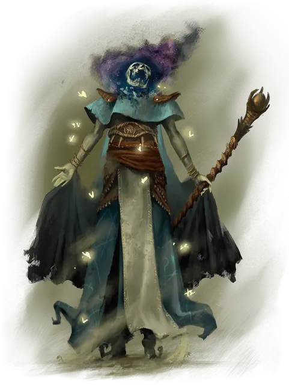

Зловещий чемпион мора
Grim Champion of Pestilence
Средняя Нежить, нейтрально-злая, именной НИП

Класс Доспеха 14 (17 с доспехом мага)
Хиты 120 (16к8 + 48)
Скорость 40 футов
| мод | спас | ||
|---|---|---|---|
| СИЛ | 10 | +0 | +0 |
| ЛОВ | 18 | +4 | +9 |
| ТЕЛ | 16 | +3 | +3 |
| мод | спас | ||
|---|---|---|---|
| ИНТ | 17 | +3 | +3 |
| МДР | 15 | +2 | +2 |
| ХАР | 21 | +5 | +10 |
Навыки Восприятие +7, Магия +8, Скрытность +9
Сопротивление урону некротическая энергия, холод; дробящий, колющий, рубящий от немагических атак
Иммунитет к урону яд
Иммунитет к состояниям бессознательность, глухота, испуг, истощение, ослепление, отравление, очарование, ошеломление
Чувства тёмное зрение 60 футов, пассивное Восприятие 17
Языки Общий, Инфернальный
Опасность 15 (13000 опыта)
Бонус мастерства +5
Особенности
Легендарное сопротивление (3/день). Если чемпион проваливает спасбросок, он может вместо этого сделать спасбросок успешным.
Ореол чумы. Чемпион окружен аурой смертоносной магии, которая принимает форму множества светящихся белёсых насекомых. Каждое существо, начинающее свой ход в пределах 10 футов от чемпиона, должно совершить спасбросок Телосложения Сл 18, иначе станет недееспособным до начала следующего хода, поскольку насекомые терзают его тело.
Действия
Мультиатака. Чемпион совершает две атаки Иссыхающим посохом, две атаки Чумным снарядом или по одной атаке каждым.
Иссыхающий посох. . Рукопашная атака оружием: +9 к попаданию, досягаемость 5 футов, одна цель. Попадание: 8 (1к8 + 4) дробящего урона плюс 21 (6к6) урона некротической энергией.
Чумной снаряд. . Дальнобойная атака заклинанием: +10 к попаданию, дистанция 120 футов, одна цель. Попадание: 23 (4к8 + 5) урона ядом и цель становится отравленной до начала следующего хода чемпиона.
Использование заклинаний. Чемпион накладывает одно из следующих заклинаний, не нуждаясь в материальных компонентах, используя Харизму в качестве базовой характеристики (Сл спасброска заклинания 18):
• Неограниченно: обнаружение магии [detect magic], доспехи мага [mage armor] (только на себя)
• 2/день каждое: усыхание [blight], глухота/слепота [blindness/deafness]
• 1/день каждое: облако смерти [cloudkill], заражение [contagion]
Легендарные действия
Чемпион может совершать 3 легендарных действия, выбирая из указанных ниже вариантов. Лишь одно легендарное действие может быть совершено за раз, и только в конце хода другого существа. Чемпион восстанавливает истраченные действия в начале своего хода.
Атака. Чемпион совершает одну атаку Иссыхающим посохом или Чумным снарядом.
Яростная погоня. Чемпион перемещается на свою скорость или приказывает своему скакуну переместиться на свою скорость. Это перемещение не провоцирует атак.
Накладывание заклинания (стоит 2 действия). Чемпион использует Использование заклинаний.
Описание
Алерон когда-то был тифлингом приключенцем, но, в отличие от многих жертв колоды многих вещей [deck of many things], он никогда не вытаскивал карту Череп. Вместо этого, когда один из его союзников вытащил карту и столкнулся лицом к лицу с образом смерти [avatar of Death], Алерон пришёл на помощь своему союзнику. Появился второй образ смерти, и Алерон был убит; вскоре после этого его немертвый труп выполз из Увядшего виноградника, зараженный чумой. Алерон обижен на своих неживых собратьев по Зловещим разорителям, считая себя лучше их всех и несправедливо приговоренный к Садам распада за акт альтруизма.
Хотя Зловещий чемпион мора и является самым слабым из трёх лидеров Разорителей, он, тем не менее, является грозным воплощением болезней и упадка. Рой насекомых окружает его издевательским ореолом, а изнуряющие болезни стекают с кончиков его пальцев. Алерон скачет верхом на скелете боевого коня [warhorse skeleton], а в его зияющих глазницах жужжат мухи.
Зловещие разорители
Мрачную Борону возглавляют три могущественных существа с титулом Зловещего чемпиона. Каждый чемпион воплощает в себе ужасную грань смерти. Джин Корвис, Зловещий чемпион Опустошения, является старейшим и самым могущественным из трёх и воплощает всепоглощающее ничто. Давным-давно она привела Мрачную Борону в Сады Наслаждения и является номинальным лидером всей нежити на демиплане. Два других чемпиона — Вайнемар Брэк, Зловещий чемпион Кровопролития, и Алерон, Зловещий чемпион Мора — соперничают с Джин за власть и вместе могут противостоять ей. Тот факт, что три чемпиона редко приходят к согласию в чем-либо, является серьезной проверкой силы группы. Вместо того, чтобы "Зловещие разорители" действовала как единая сила, каждый из трех чемпионов обычно преследует свои собственные интересы, редко сотрудничая или делясь разведданными или ресурсами